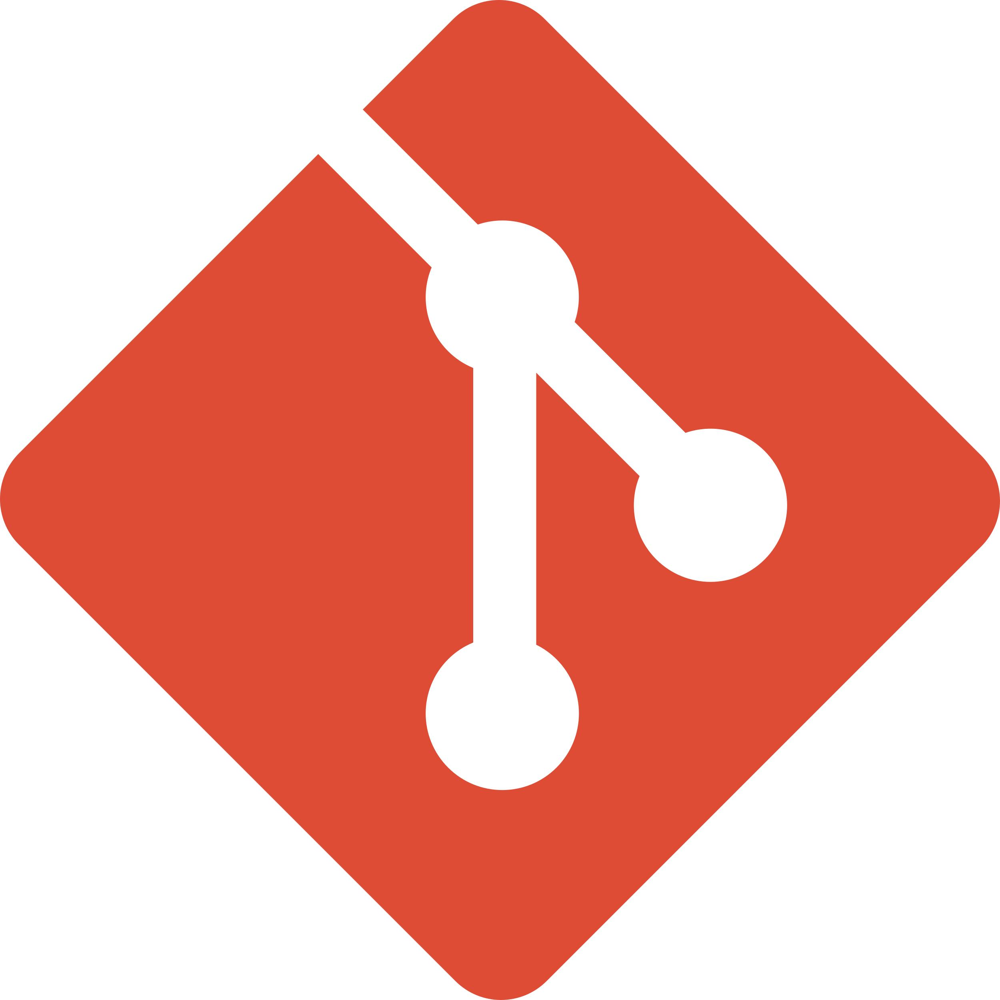
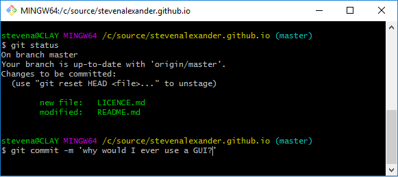
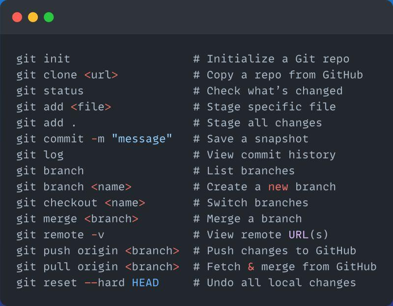
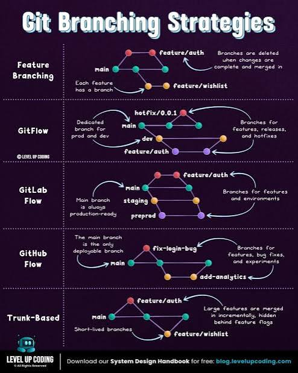

01
Repository
A repository contains the project's files, commits, branches and Git history.
git init
VERSION CONTROL • GIT • GITHUB
A simple portfolio documenting my understanding of Git, GitHub, version control, branching, commits, collaboration and real-world software projects.

01 — ABOUT
Git is a distributed version control system used to track changes in source code and collaborate with other developers.

Git allows developers to safely manage the history of a software project. Instead of manually keeping copies of different versions of a project, Git records changes through commits.
Git also makes it possible to work on different features using branches and combine those changes through merging or rebasing.
02 — GIT SKILLS
Core concepts used in everyday software development with Git.
A repository contains the project's files, commits, branches and Git history.
git init
The working tree contains the files currently being edited in the project.
git status
Changes are placed into the staging area before creating a commit.
git add .
A commit records a snapshot of changes in the project's history.
git commit -m "message"
Branches allow developers to work on features independently.
git branch feature
Merge combines changes from one branch into another branch.
git merge feature
Rebase moves or reapplies commits onto another base commit.
git rebase main
Remote repositories allow projects to be shared through platforms such as GitHub.
git push
03 — WORKFLOW
A basic development cycle from writing code to publishing changes.

Create or modify project files.
Select changes using Git add.
Save the changes to Git history.
Push the changes to GitHub.
04 — COMMANDS
$ git status
$ git add .
$ git commit -m "Update portfolio"
$ git branch feature
$ git checkout feature
$ git push origin feature
Everything up-to-date
05 — PROJECTS
Examples of software projects where version control can be applied throughout development.
A timed online quiz application with questions, chapters, scoring, results and review functionality.

Student-focused software projects developed using structured version control and Git workflows.
A practical Git learning project covering commits, branches, merges, conflicts, remotes and GitHub.
GITHUB
Explore my repositories, commits and software development projects.
06 — CONTACT
Interested in software development, Git, GitHub and building practical systems.